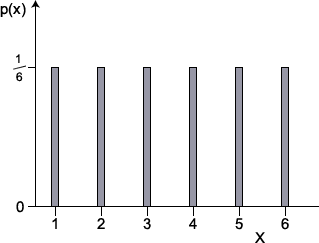

Equally likely values
One simple family of discrete distributions that is occasionally encountered is the family of uniform distributions. A uniform distribution arises when it can be argued that each integer value between two limits has the same chance of being observed — equally likely outcomes.
Definition
If a discrete random variable, \(X\), can only take integer values from \(a\) to \(b\), where \(a\) and \(b\) are integer constants, and each such value is equally likely, it is said to have a discrete uniform distribution.
\[ X \;\; \sim \; \; \UniformDistn(a, b) \]Probability function
Since there are \((b-a+1)\) equally likely values between \(a\) and \(b\) (inclusive), the probability function of \(X\) is
\[ p(x) = \begin {cases} \displaystyle \frac 1 {b-a+1} & \quad \text{if } a \le x \le b \\[0.5em] 0 & \quad \text{otherwise} \end {cases} \]Example
If the probabilities are displayed graphically in a bar chart, each bar has the same height.
